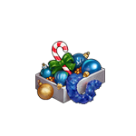

Получено: файл; исходный URL. Исходный файл без перекодирования с альтернативного хоста. Совпадение с файлом исходной ссылки отдельно не проверено; авторство не установлено. Страница: источник.
Ёлочные шарики
браузерная социальная версия; историческая статья, платформу уточнить- Тип
- Материал
- Покупка
- нет данных
- Продажа
- нет данных
- Как получить
- нет данных
- Применение
- нет данных
- Особенности
- нет данных
- Версия и дата
- браузерная социальная версия; историческая статья, платформу уточнить
Данные по источнику · браузерная игра; платформа не уточнена · 20.12.2014 — дата публикации; дата правок неизвестна
Предварительно: Фанатский источник; возможны ошибки и изменения версии. Исходное расположение объектов на острове не подтверждается текстовой карточкой.. Требуется сверка.
- Получение
- По статье выпадают из мешков Санты в Сказочном лесу; нельзя купить, продажа 1500 монет. Ссылки на цвет мешка у источника местами подписаны противоречиво.
- Применение
- Ингредиент шести вариантов дорожки в Бумажном замке. Не путать с отдельно описанным материалом «Ёлочный шарик» для Праздничной ели.


Связанные сущности
- Бумажный замок — материал, см. рецепт или стадию
- Дорожка 1 — ледовая — материал создания
- Дорожка 2 — ледовая — материал создания
- Дорожка 3 — ледовая — материал создания
- Дорожка 4 — ледовая — материал создания
- Дорожка 5 — ледовая — материал создания
- Дорожка 6 — ледовая — материал создания